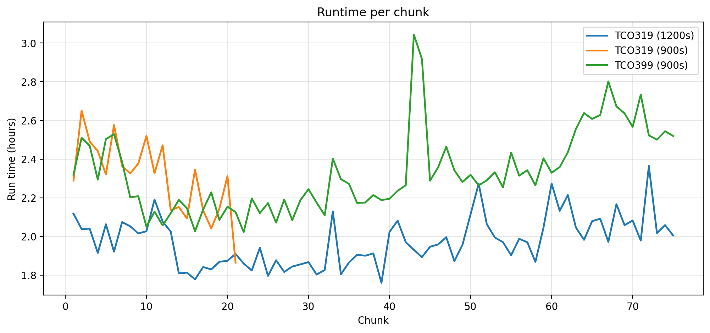
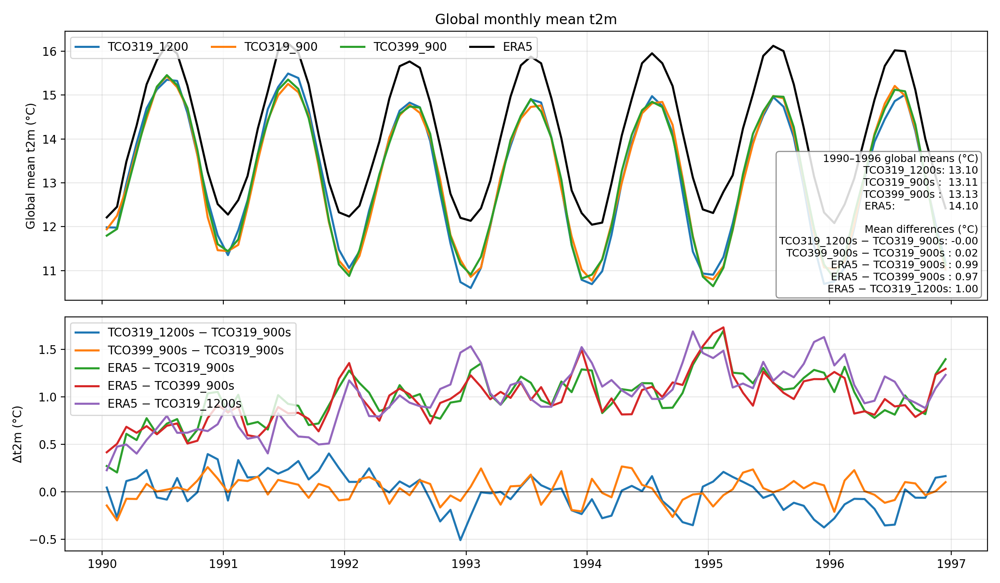
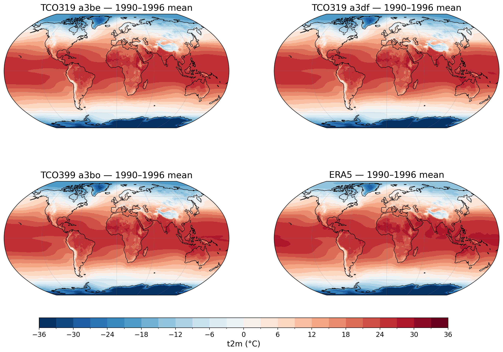
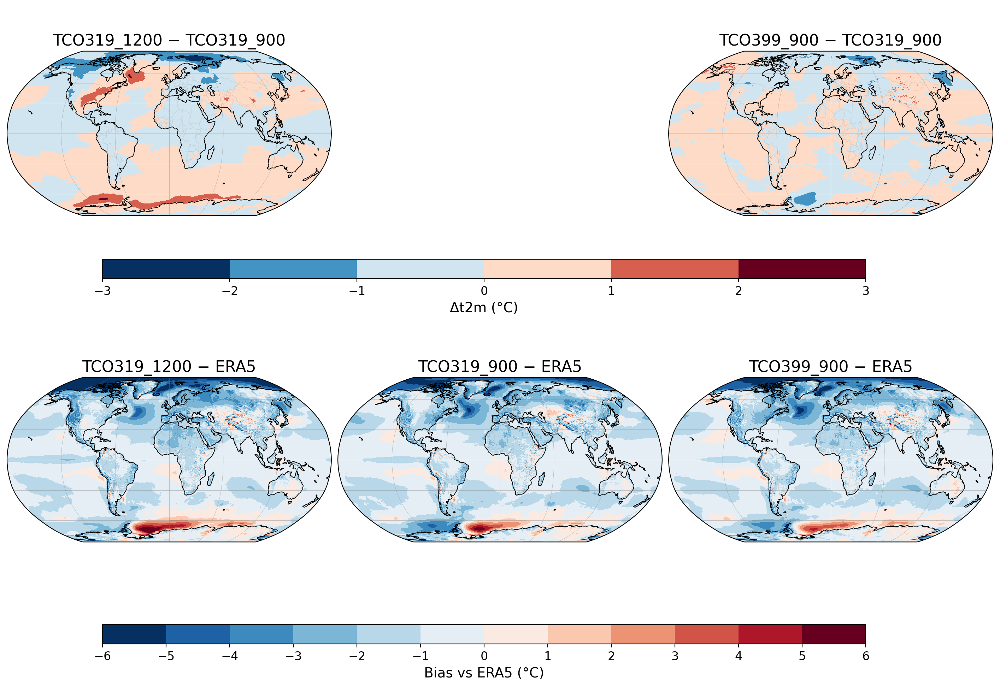
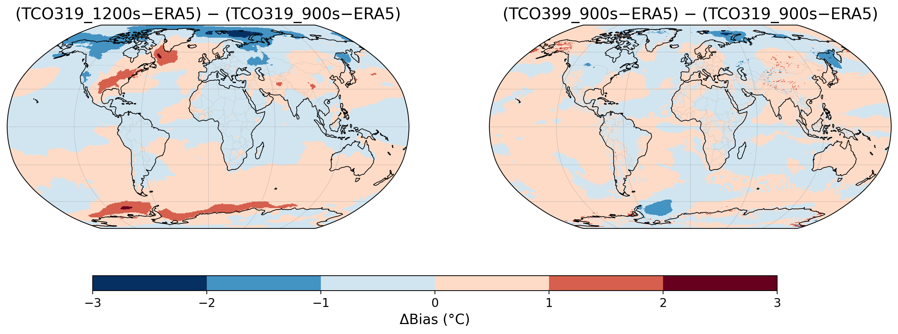

CLIMATE MODEL DASHBOARD
3 experiments + ERA5 — Simulation: 1990–1996
Performance summary
| Metric | TCO319 (1200s) | TCO319 (900s) | TCO399 (900s) |
|---|---|---|---|
| Simulation (yrs) | 25 | 7 | 25 |
| avg run time | 01:58 | 02:18 | 02:19 |
| median run time | 01:58 | 02:19 | 02:17 |
| mean SYPD | 4.1 | 3.5 | 3.5 |
| mean ASYPD | 4.0 | 3.5 | 3.4 |
| No. of Grid pts. | 421,120 | 421,120 | 654,400 |
| Timestep | 1200 s | 900 s | 900 s |
Performance breakdown
| Component | TCO319 (1200s) | TCO319 (900s) | TCO399 (900s) |
|---|---|---|---|
| DCQ_BASIC | 138.57 hours | 74.54 hours | 168.81 hours |
| LRA_GENERATOR | 963.82 hours | 139.75 hours | 5197.30 hours |
| SIM | 1340747.02 hours | 463070.22 hours | 1699465.60 hours |
| DCQ_FULL | 99.49 hours | 46.42 hours | 111.50 hours |
| FIX_CONSTANT | 111.00 hours | 22.15 hours | 96.69 hours |
Runtime per chunk

Global monthly mean

Mean maps

Bias maps

Bias-difference maps
